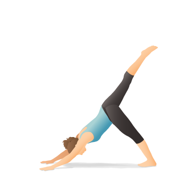

I make my home in Portland, Oregon.
I've held jobs all over the service industry, but right now, I work in strategic planning for a large customer experience team in the technology sector.
My one true passion in life is learning. I'm incredibly fortunate that this passion has led me to a new found love of web design.
I want to master the process of building web sites and increase my knowledge, skills and abilities in:
I’d like to build a business and a reputation helping clients craft an engaging and immersive online presence.
I'm always looking for ways to grow my skill set and places where I can use and strengthen the skills I've already earned. My current skill set includes:
All work and no play makes Jack a dull boy. That's why I engage in a variety of activities that keep me well rounded.
I knit to keep me connected to physical creation. I cook to nourish myself and others with nutrition, and love. And I start every day with yoga to make space for all of the glorious adventures that await me.
